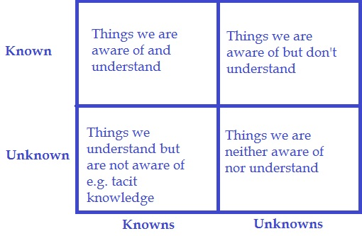

Managing by metrics is an organizational reality, but it comes with pitfalls. What you'll read about below has become second nature to me but throughout my career in strategy, startups, and education I've found these are still new ideas for even seasoned vets. Shared understanding is crucial to making orgs work, and I'd like more people to understand these ideas. Wherever you may be starting I hope your understanding ends up in one of the top quadrants of this 2x2 after reading.
Targets can create incentives, which can have unintended consequences and lead to perverse incentives. This is at the core of Goodhart's Law, Campbell's Law, and Wildavsky’s Law. The McNamara Fallacy is a close cousin. Don't get hung up on the semantics of calling these "laws." The takeaway is that these are principles that people have encountered in different eras and across different domains.
Understanding these pitfalls is a start but being aware of them doesn’t mean you know how to deal with them.
The ideas mentioned above tell us that creating targets will alter behavior, but the following ideas show us how. Nearly 30 years ago Brian Joiner gave us three categories of expected “patterns of behavior” people will exhibit in a system especially when staring down the barrel of a numerical target tied to their comp or job:
I've added a fourth category to Joiner's list:
4. (Try to) Improve the system (all too often not possible or too many roadblocks in someone's way to do this)
A reason that small YC startup can seem unreasonably effective while a massive organization can't ship is reason #4. In a small startup, alignment and agency to improve the system are common. In Big Co. the system forces too much behavior into the first three options.
These four responses can both explain and predict behavior.
One note: tunnel vision can set in about looking at financial incentives that can cause these behaviors. Meanwhile a team or company's culture can be just as powerful at causing some of these unwanted behaviors even when there is no money on the line for an individual.
Eli Goldratt famously said "tell me how you measure me, and I will tell you how I will behave."
Similiarly, W. Edwards Deming who never wore kid gloves stated, "If management sets quantitative targets and makes people’s jobs depend on meeting them, they will likely meet the targets–even if they have to destroy the enterprise to do it.”
Deming famously called for the elimination of numerical targets. He saw them doing more harm than good. IMO and experience it's not realistic to expect an organization to do that, but it is critical to be aware of, understand, and be on the lookout for these pitfalls when managing by metrics.
Ignorance that there will be trade-offs from managing by metrics is something I am continuously surprised to see even from smart, experienced, senior level people with plenty of successes under their belts.
That depends on who you are and the scale of your organization. The gist though is that like a bloodhound, you need to sniff out the unintended consequences of the targets that are set. See and understand, then weigh, and measure the trade-offs that come from people trying to hit the metrics they are managed by.
The next step is to embed this as an organizational competency in every management layer.
While learning to do that, borrow from the Toyota Production System. The Toyota Production System has a core tenet— go to the source. Upward reporting in an organization is just as lossy as that game of telephone you played with your classmates in elementary school. When it really matters, go to the source and see for yourself.
With awareness of these pitfalls you can do two things:
1. Gameplan for them ahead of time.*
2. Keep your eyes open and antennas up for unintended consequences.
With foresight and/or the knowledge gained from paying attention you can learn what countervailing metrics you can use to balance the original measurement. A countervailing metric will give you a more comprehensive view of the system that can better help you understand if the original metric is causing unintended consequences.
The ability to understand if a metric is telling you what you think it is, and if not, where the discrepancies lie sets apart effective managers and executives.
It also sets apart organizations ignorant of these ideas that chase their tails trying to solve problems without understanding the above's role in causing them from orgs that are intentional and vigilant about managing by metrics.